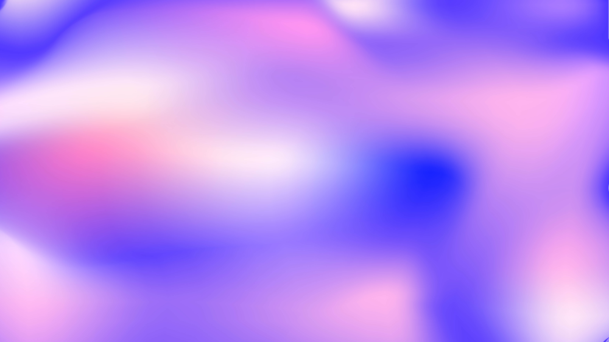

Hi, I'm Alice
I'm a digital media designer with a passion for UX and communication design. I aim to create meaningful experiences that connect people and make technology more accessible.

I'm a digital media designer with a passion for UX and communication design. I aim to create meaningful experiences that connect people and make technology more accessible.